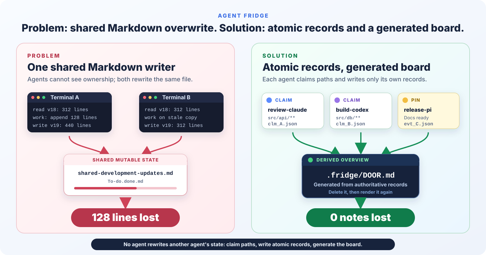
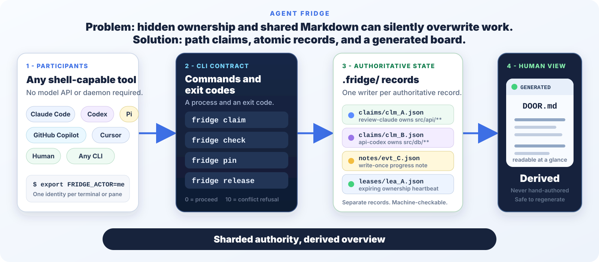

Stable refusal
An overlapping exclusive claim exits `10`. Scripts can branch on it and agents can stop before writing.
Agent Fridge
Different agent harnesses coordinate their own workers - not each other. An agent team, a solo coding agent, an IDE agent, and a human can all be correct inside their own context and still collide in one checkout. Agent Fridge gives them one vendor-neutral path-ownership layer.
The engineering problem
A team lead can coordinate the agents it spawned through an internal task board. A second harness, IDE agent, or human terminal cannot see that board, and none of those private plans creates repository-wide path ownership.
The failure is larger than agent versus agent. It is coordination island versus coordination island. Terminal A can run a multi-agent team whose lead, reviewer, builder, and tester all agree on an internal task list. Terminal B can run a different harness with a different lead and a different list. Terminal C can hold a solo agent or a human. Every lane can look green locally.
The Git checkout sits outside those harness boundaries. Claude Code, GitHub Copilot, Codex, an IDE agent, tmux panes, and plain terminals can all target the same path without seeing one another's intent. Git records the final bytes after editing; it does not establish ownership before editing begins.
internal tasks: coordinated
separate plan: coordinated
local context: coordinated
src/checkout/routes.ts
design/checkout/copy.md
release.md
Green inside one harness does not mean safe across the repository. Internal task boards coordinate their own teammates. Agent Fridge coordinates at the checkout boundary, where every harness and terminal can see the same claim.
shared_tasks.md file can coordinate teammates inside one harness
and still be invisible to every other harness touching the same project.
The incident
The original failure was not a reckless edit. It was a correct read, correct work, and correct write performed concurrently against one shared Markdown file.
$ read shared-development-updates.md
212 lines loaded
$ implement checkout validation
tests: 18 passed
$ append progress and write file
227 lines written
$ read shared-development-updates.md
212 lines loaded - stale copy
$ prepare release evidence
docs: complete
$ append progress and write file
214 lines written - alpha's update disappeared
Both terminals read the same 212-line document.
Terminal A writes its expanded 227-line version.
Terminal B writes a stale 214-line version based on the earlier read.
The file is valid Markdown. The missing work is not reported as a conflict.
The coordination layer
Agent Fridge makes each participant authoritative only for its own records. The human-readable board is derived from those records and can be rebuilt at any time.
An overlapping exclusive claim exits `10`. Scripts can branch on it and agents can stop before writing.
Claims, leases, sessions, and notes are separate records. One participant never rewrites another participant's record.
`.fridge/DOOR.md` is generated, disposable, and never read as protocol state.
Illustrative workspace
This fictional project runs four terminals on one machine against one checked-out integration branch. The PR numbers are work references, not four local branches.
Code review - PR #41Remote diff plus local read-only checks
shared claim$ fridge claim "src/checkout/**" --mode shared \
--task "Review PR #41; read only"
Card clm_review is yours.
$ gh pr diff 41 -- src/checkout
$ fridge pin "PR #41: rounding path needs a boundary test"Product design - checkout UXWrites only the design lane
exclusive$ fridge claim "design/checkout/**" \
--task "Design checkout UX"
Card clm_design is yours.
$ fridge pin "UX states drafted: validation, recovery, retry"API build - PR #42Implements the checkout endpoint
exclusive$ fridge claim "src/api/checkout/**" \
--task "Build checkout API for PR #42"
Card clm_api is yours.
$ fridge check src/api/checkout/routes.ts --for-write
yours src/api/checkout/routes.tsDocs and release - PR #43Collects release proof
exclusive$ fridge claim "docs/release/**" \
--task "Prepare release notes for PR #43"
Card clm_release is yours.
$ fridge pin "Release checklist ready; waiting on API proof"$ fridge claim "design/checkout/**" --task "Design checkout UX"
Card clm_design is yours.
exit 0$ fridge claim "src/api/checkout/**" --task "Build checkout API for PR #42"Card clm_api is yours. exit 0
The four original claims are disjoint.
Topology truth: these panes share one checkout, so they share live claims. Separate Git worktrees or clones do not share live `.fridge/` state. Worktrees provide real file isolation; coordinate scope between them through GitHub, issues, or a human plan. Agent Fridge can still coordinate several participants inside any one worktree.
Before, after, and underneath
The old path has concurrent writers targeting one document. The new path gives each participant its own record and derives the overview.


Real command contract
The important output is not the prose. It is the stable exit code that lets a person, shell script, hook, or agent stop before a collision.
fridge init
export FRIDGE_ACTOR=claude-review
fridge join --agent "$FRIDGE_ACTOR" --vendor claude
fridge claim "src/api/**" --task "Refactor the router" --ttl 30m
fridge pin "Router split started; baseline tests pass"
fridge heartbeatexport FRIDGE_ACTOR=copilot-fix
fridge join --agent "$FRIDGE_ACTOR" --vendor copilot
fridge claim "src/api/routes.ts" --task "Fix route copy"Somebody already has that chore.
who claude-review
scope src/api/**
doing Refactor the router
E_CONFLICT: overlapping paths.
exit 10fridge handoff clm_... --to copilot-fix \
--note "Routes done; error path and docs remain"
# Or, when complete:
fridge release clm_... --outcome done \
--note "Router split complete; focused tests pass"Where it works
There is no vendor SDK. Participants invoke `fridge`, read plain ASCII output, and branch on exit codes.
The operating model
`COLLABORATE.md` defines how a real team joins, reports progress, expands scope, recovers stale leases, and hands unfinished work to another owner.
fridge pin "HANDOFF PR #42: checkout validation changed; focused tests pass; retry test and docs remain; timeout behavior is the main risk; paths: src/api/checkout/**"
fridge handoff clm_... --to release-pi \
--note "PR #42; proof pinned; retry test and docs remain"Honest comparison
Agent Fridge solves one narrow case: cooperating participants editing one checkout at the same time. Several alternatives are better outside that case.
| Approach | Where it wins | Where it stops |
|---|---|---|
| Git worktrees | Real physical isolation, separate branch and index, no advisory trust needed. | Live claims do not cross worktrees; builds and dependencies may be expensive to duplicate. |
| Git branches | Review, revert, cherry-pick, remote sharing, and independent lines of work. | Two branches cannot be checked out concurrently in one working tree; merge cost arrives later. |
| Shared Markdown | Excellent when one human is the only writer and everyone else reads. | Concurrent read-modify-write is lossy and has no conflict exit. |
| `flock` or lockfiles | Simple, battle-tested protection for one short critical section on one machine. | No path-set overlap model, owner task, handoff, durable history, or native Windows story. |
| SQLite or a local database | Transactions, queries, constraints, and strong serialization for a purpose-built coordinator. | Requires a schema and client surface, is awkward in Git, and still needs a universal integration contract. |
| MCP coordination server | Tool calls are ergonomic and reliable when every participant is an MCP client. | A server must be configured and kept alive; shells, humans, hooks, and CI are not all MCP clients. |
| Agent Fridge | Portable path claims, leases, handoffs, attribution, and write-once history with no service. | Advisory only, local to one checkout, and not a replacement for branch or OS isolation. |
Try it locally
The primary Go binary is self-contained. A complete zero-runtime-dependency Node implementation passes the same conformance vectors.
Download the latest binary and verify its checksum.
curl -fsSL https://github.com/RagnarPitla/agent-fridge/releases/latest/download/install.sh | shInstall the native Windows binary.
irm https://github.com/RagnarPitla/agent-fridge/releases/latest/download/install.ps1 | iexGo 1.21 or newer, standard library only.
go install github.com/RagnarPitla/agent-fridge/cmd/fridge@latestNode 20.11 or newer, zero runtime dependencies.
npm install -g github:RagnarPitla/agent-fridgefridge init
fridge join --agent claude --vendor claude
export FRIDGE_ACTOR=claude
fridge claim "src/api/**" --task "Refactor the router"
fridge boardgit clone https://github.com/RagnarPitla/agent-fridge.git
cd agent-fridge
npm run demoScope and trust boundary
Agent Fridge trusts every process that can write to `.fridge/`. That is the same boundary as the working tree itself.
Path traversal and symlink escapes are refused. Records are atomic. There is no network, telemetry, shell concatenation, or mutating Git command.
Only a human should authorize force recovery. Notes are durable and may be committed, so never pin credentials, customer data, or private source text.
Open source, Apache-2.0
The repository ships the incident demo, two independent implementations, conformance vectors, parity tests, real multi-process tests, and the full on-disk protocol.
Use `COLLABORATE.md` to bring Agent Fridge into a real project. Use `CONTRIBUTING.md` when you want to change Agent Fridge itself.